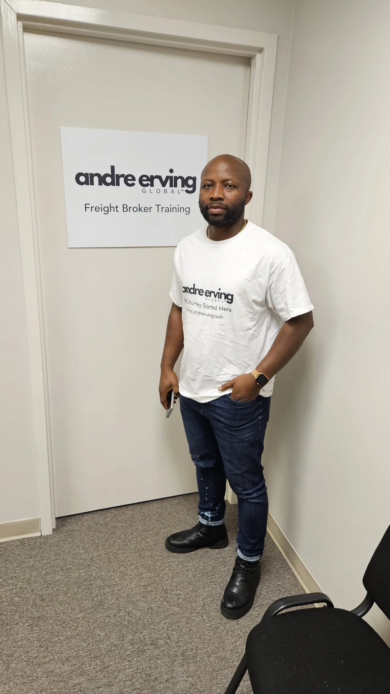
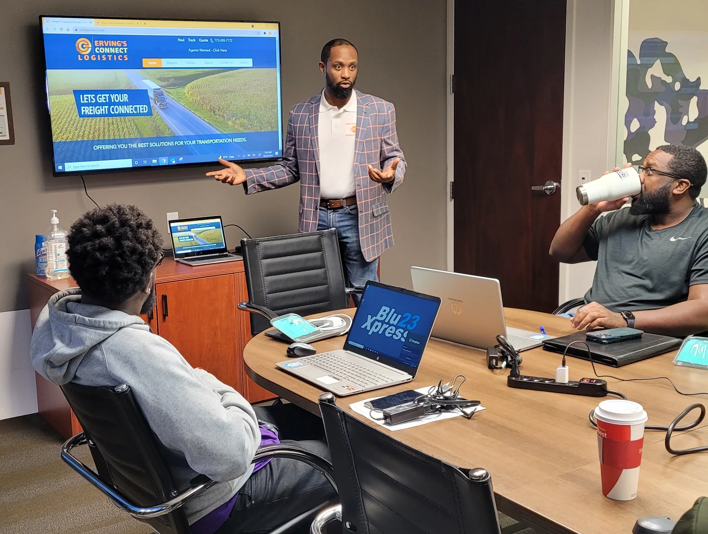
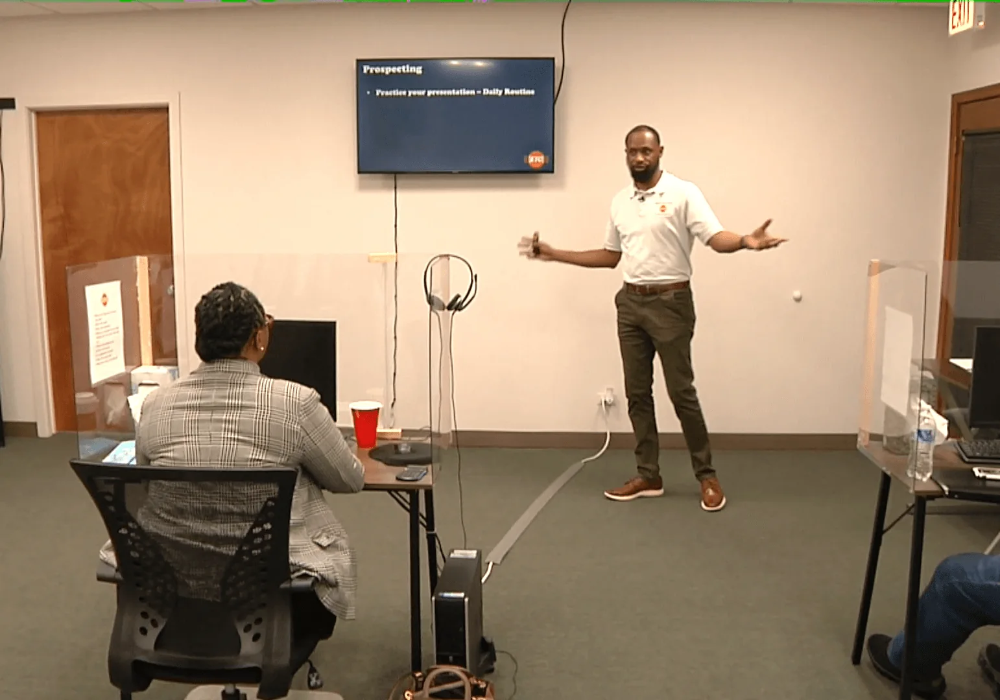

Choose the model
Define what you sell, who the customer is, how the business gets paid, and what responsibilities come with the model.
A practical starting point for entrepreneurs exploring transportation, logistics, service businesses, and the systems required to move from idea to operation.

Define what you sell, who the customer is, how the business gets paid, and what responsibilities come with the model.
Separate general business setup from industry-specific licenses, registrations, authority, insurance, tax, and safety responsibilities.
Create repeatable processes for sales, service delivery, documentation, billing, customer communication, and performance review.
Trucking, freight brokerage, and dispatching are related—but they are not the same business.

Carrier operations, equipment, drivers, safety, freight, and financial management.
Explore Trucking Pro →
Shippers, carriers, broker authority, pricing, documentation, risk, and operations.
Explore broker training →
Carrier-side support, workflow, agreements, communication, load search, and role boundaries.
Explore dispatcher training →